Bienvenido a CarView
Somos CarView, una pagina amante de los autos, su creacion e historia de las grandes marcas que hoy en dia lideran el mundo Automotriz
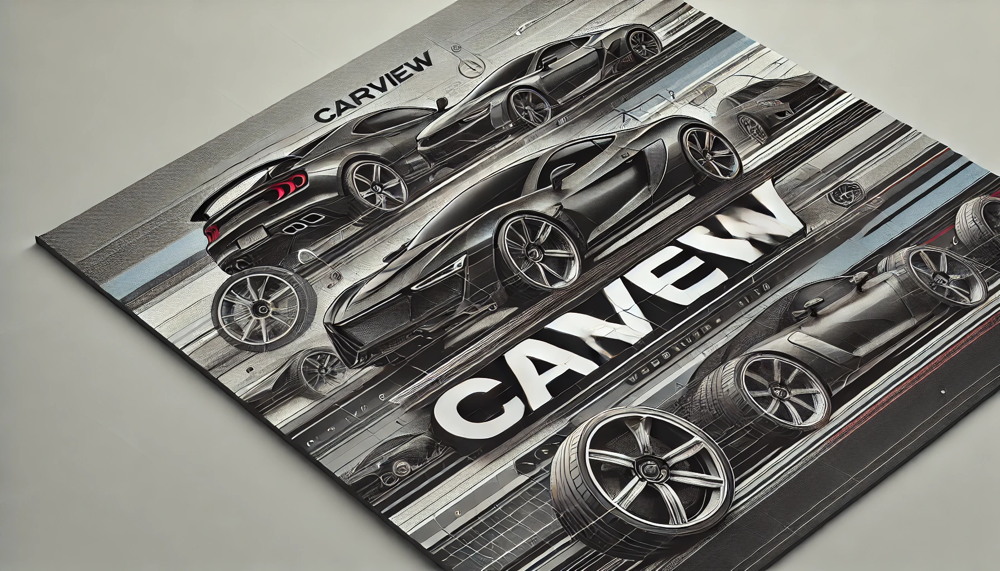Somos CarView, una pagina amante de los autos, su creacion e historia de las grandes marcas que hoy en dia lideran el mundo Automotriz
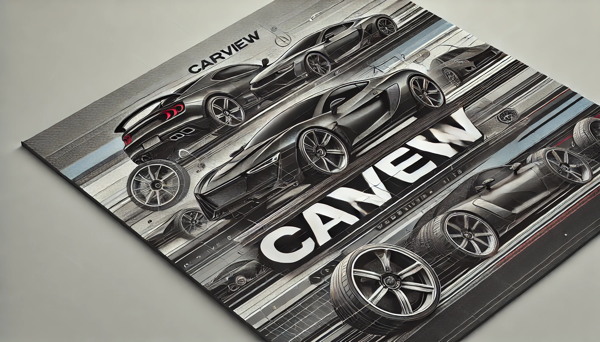El automóvil, tal como lo conocemos hoy, es el resultado de una larga evolución de ideas, innovaciones y desarrollos técnicos que comenzaron a finales del siglo XVIII y principios del siglo XIX. Aunque los primeros vehículos eran de propulsión humana o animal, la búsqueda de un medio de transporte más eficiente llevó a inventores a experimentar con motores de vapor, electricidad y combustión interna.
El primer vehículo autopropulsado se atribuye a Nicolas-Joseph Cugnot, quien en 1769 creó un carro de vapor. Mientras los misioneros franciscanos enviados por Carlos III fundaban las primeras ciudades de California y el explorador James Cook descubría Tahití, el ingeniero Joseph Cugnot desarrollaba en la Francia de Luis XV un sistema mecánico para transportar las piezas de artillería hasta el campo de batalla. Fue el primer vehículo de la historia: un antepasado lejano del coche. Cugnot aplicó los principios de la máquina de vapor, descrita un siglo antes por su compatriota Denis Papin y perfeccionada en 1763 por el escocés James Watt, un invento que no tardaría en revolucionar el mundo dando paso a la era industrial.
Volviendo al carro de Cugnot, el primer vehículo motorizado se componía de un armón –normalmente tirado por caballos– al que se adaptó una gran caldera donde el agua se calentaba con leña y producía vapor. Este último, al alcanzar determinada presión, impulsaba los pistones de dos cilindros laterales que actuaban sobre unas ruedas dentadas. El sistema, similar al usados en los relojes, transformaba así el movimiento lineal en circular al hacer girar la única rueda tractora.
Este vehículo, sin embargo, tenía limitaciones significativas y no fue práctico para el uso cotidiano. A finales del siglo XIX, el desarrollo de motores de combustión interna, especialmente el motor de cuatro tiempos inventado por Nikolaus Otto en 1876, marcó un hito crucial en la historia del automóvil. Nikolaus realizó notables estudios sobre el motor de gas y en 1872 llevó a la práctica la construcción del motor de combustión interna de cuatro tiempos. De este modo creó una máquina motriz estática a partir de la cual desarrollaría el motor Otto. Este se hizo famoso en todo el mundo como máquina para el accionamiento de vehículos, trenes, barcos y aviones. Este motor sirvió de base para la invención del motor diésel. En los 15 años siguientes se vendieron más de 50 000 motores, muchos de los cuales se emplearon en fábricas de maquinaria. En 1884, la patente de Otto se hizo pública.
Henry Ford nació el 30 de julio de 1863 en Dearborn, Michigan, Estados Unidos. Desde joven mostró interés por la mecánica y la ingeniería, trabajando en la granja familiar antes de mudarse a Detroit para aprender sobre la maquinaria industrial. Su curiosidad y habilidades técnicas lo llevaron a trabajar en varias empresas de maquinaria antes de fundar su propia compañía.
En 1903, Ford fundó la Ford Motor Company. Su visión era producir automóviles accesibles para el público en general, algo que era prácticamente inalcanzable en esa época. Antes de Ford, los automóviles eran considerados artículos de lujo, reservados para los ricos. Ford se propuso cambiar esto y hacer del automóvil un medio de transporte para las masas.
En 1908, Ford lanzó el Modelo T, un automóvil que se convirtió en un símbolo de la revolución industrial. Su diseño simple y robusto, junto con su precio asequible, permitió que millones de personas pudieran poseer un automóvil por primera vez. Sin embargo, la verdadera innovación de Ford fue la introducción de la producción en cadena en 1913. Este método de fabricación permitió a la Ford Motor Company producir vehículos a un ritmo nunca antes visto, reduciendo significativamente el costo de producción.

Ford fue pionero en varias innovaciones más allá de la producción en cadena. Introdujo el uso del acero de bajo carbono y fue uno de los primeros en implementar el uso de neumáticos de aire en los automóviles. También fue un defensor de la investigación y el desarrollo, estableciendo laboratorios de investigación para mejorar los procesos de fabricación.
El impacto de Henry Ford en la industria automotriz es incuestionable. No solo hizo que el automóvil fuera accesible para el público en general, sino que también transformó la forma en que se fabrican los productos en todo el mundo. Su legado perdura no solo a través de la Ford Motor Company, que sigue siendo uno de los principales fabricantes de automóviles del mundo, sino también en la forma en que la producción en cadena ha influido en muchas industrias.

A lo largo del siglo XX, la industria automotriz experimentó numerosas innovaciones. Desde el desarrollo de sistemas de frenos más seguros hasta la incorporación de tecnologías como la inyección electrónica y los sistemas de navegación GPS, los automóviles han evolucionado significativamente. Además, la seguridad y la eficiencia de combustible se convirtieron en prioridades, especialmente a partir de la crisis del petróleo de 1973, que impulsó la investigación de vehículos más eficientes y respetuosos con el medio ambiente.
La industria automotriz ha visto surgir y caer numerosas marcas a lo largo de su historia. Algunas de las más icónicas incluyen:
 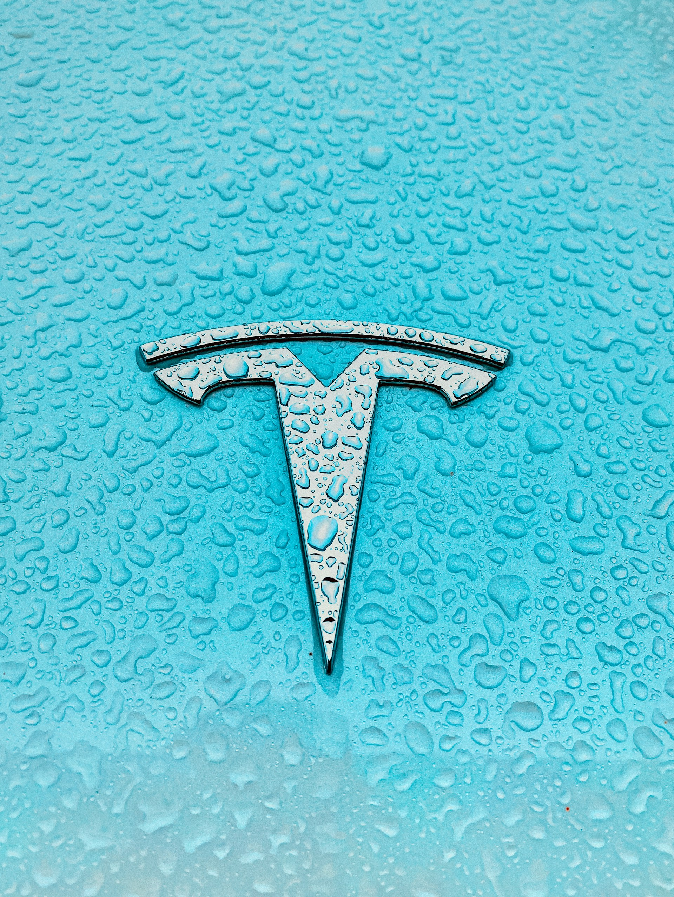
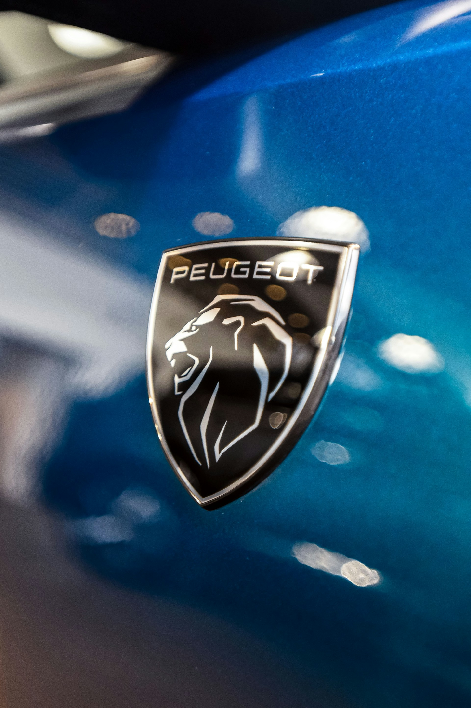
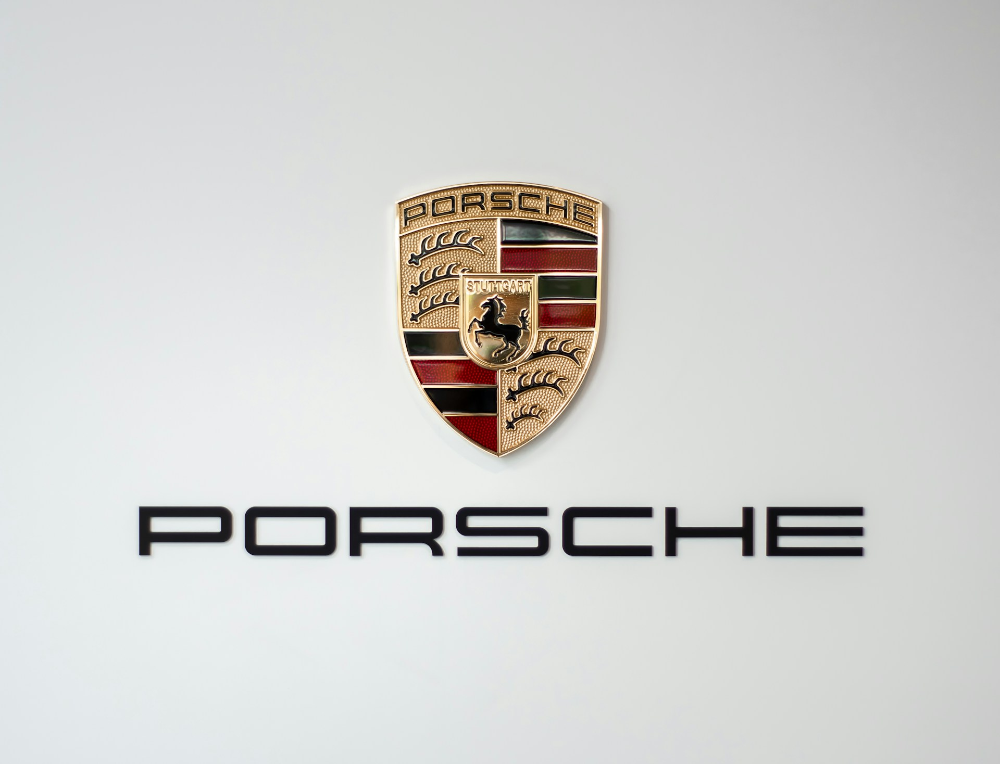
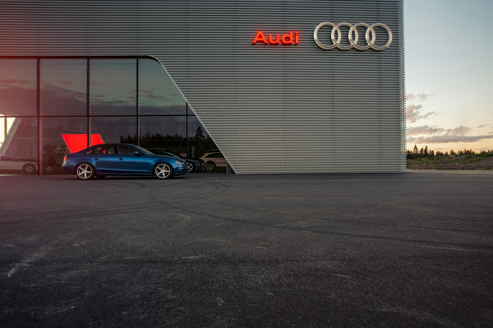
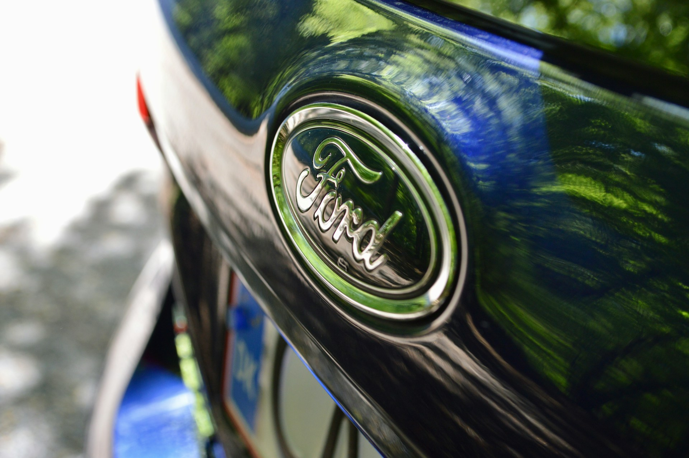
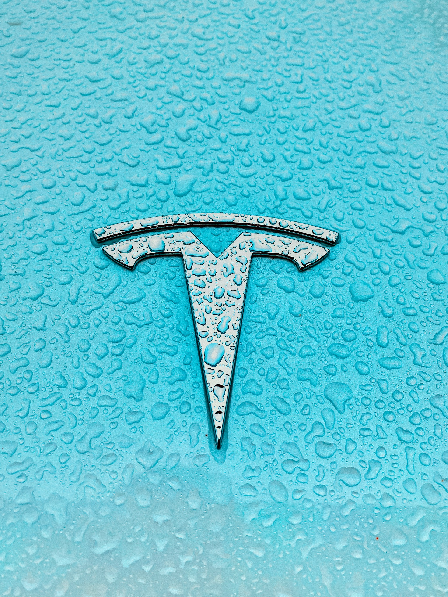
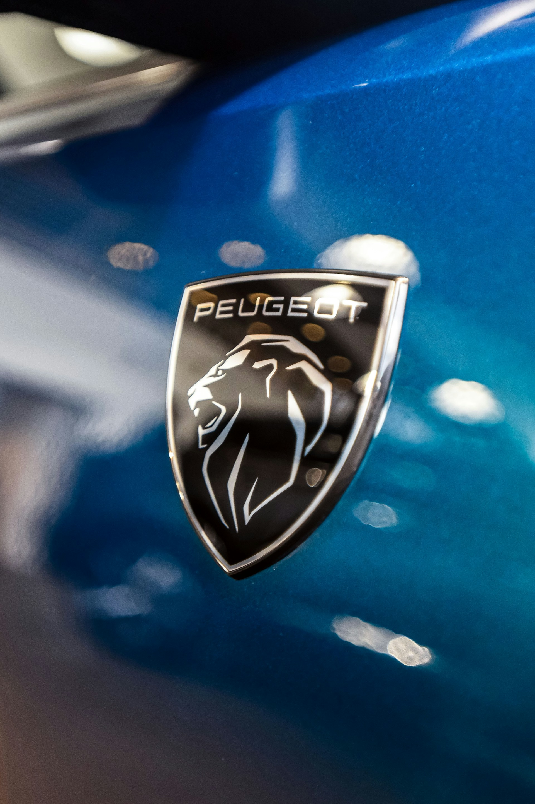
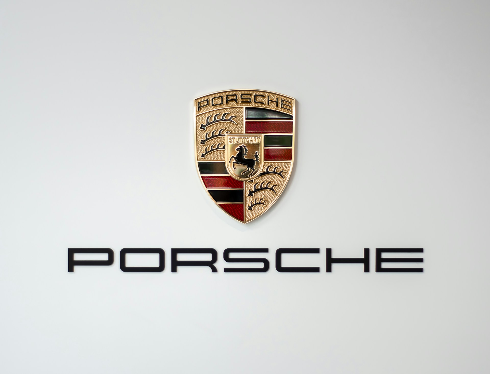
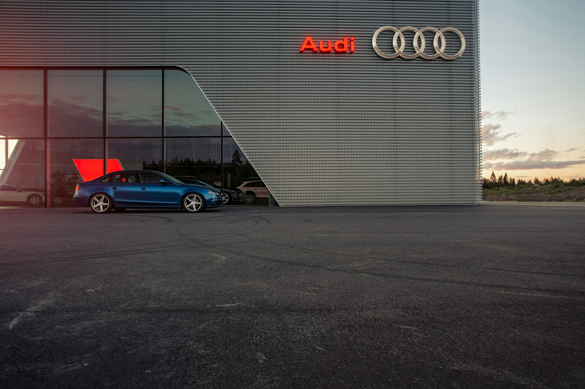
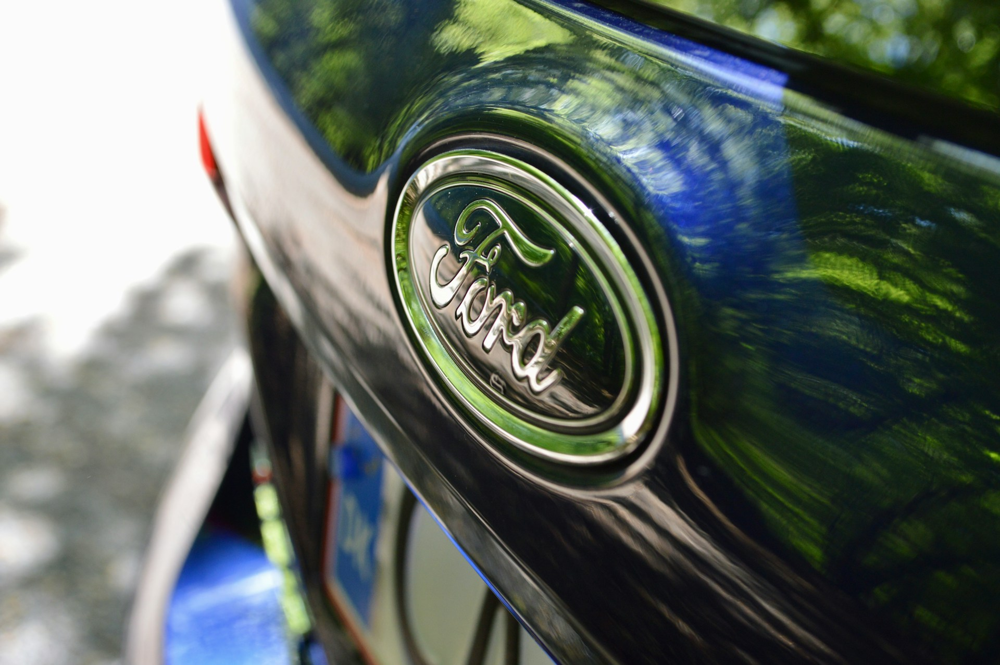